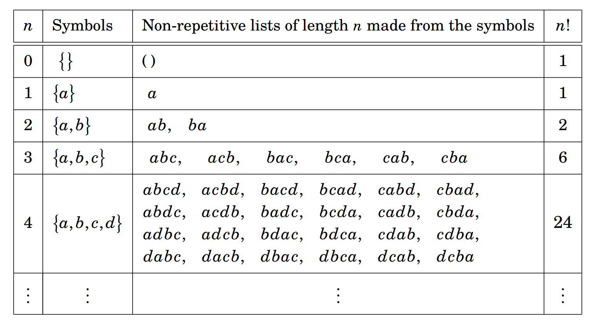
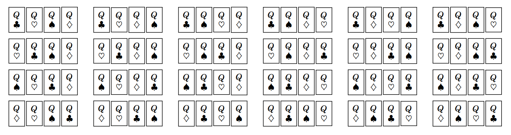
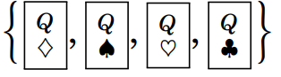
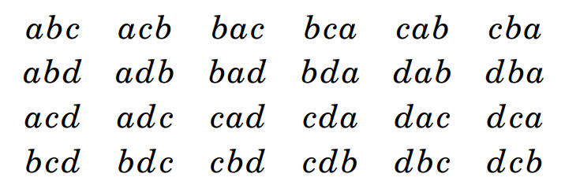
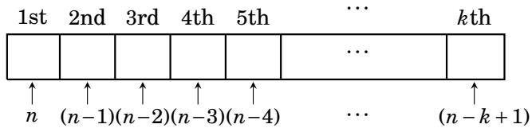
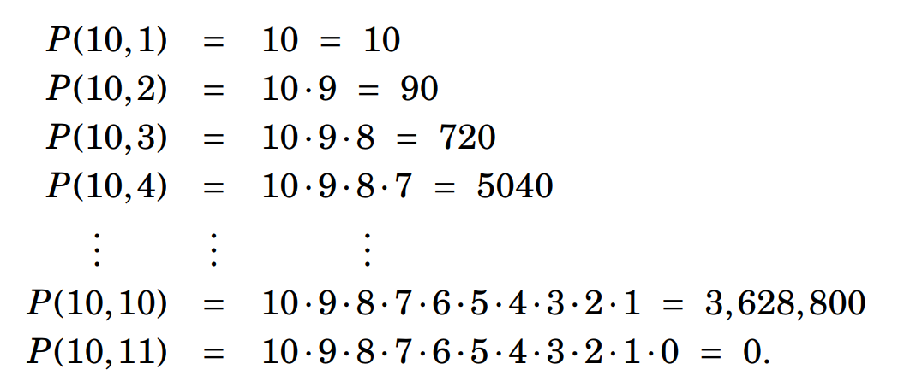

3.4 Factorials and Permutations¶
In working examples from the previous two sections you may have noticed that we often need to count the number of non-repetitive lists of length \(n\) that are made from \(n\) symbols. This kind of problem occurs so often that a special idea, called a factorial, is used to handle it. The table below motivates this. The first column lists successive integer values \(n\), from 0 onward. The second contains a set \(\{a, b, \ldots \}\) of \(n\) symbols. The third column shows all the possible non-repetitive lists of length \(n\) that can be made from these symbols. Finally, the last column tallies up how many lists there are of that type. When \(n = 0\) there is only one list of length 0 that can be made from 0 symbols, namely the empty list \(( )\). Thus the value 1 is entered in the last column of that row.
{kind=link}

For \(n > 0\), the number that appears in the last column can be computed using the multiplication principle. The number of non-repetitive lists of length \(n\) that can be made from \(n\) symbols is \(n \cdot ( n - 1 ) \cdot ( n - 2 ) \cdots 3 \cdot 2 \cdot 1\). Thus, for instance, the number in the last column of the row for \(n = 4\) is \(4 \cdot 3 \cdot 2 \cdot 1 = 24\). The number that appears in the last column of Row \(n\) is called the factorial of \(n\). It is denoted with the special symbol \(n!\), which we pronounce as “\(n\) factorial.” Here is the definition:
Definition 3.1: If \(n\) is a non-negative integer, then \(n!\) is the number of lists of length \(n\) that can be made from \(n\) symbols, without repetition. Thus \(0! = 1\) (an empty list) and \(1! = 1\). If \(n > 1\), then \(n! = n \cdot ( n - 1 ) \cdot ( n - 2 ) \cdots 3 \cdot 2 \cdot 1\).
It follows that:
\(0! = 1\)
\(1! = 1\)
\(2! = 2 \cdot 1 = 2\)
\(3! = 3 \cdot 2 \cdot 1 = 6\)
\(4! = 4 \cdot 3 \cdot 2 \cdot 1 = 24\)
\(5! = 5 \cdot 4 \cdot 3 \cdot 2 \cdot 1 = 120\)
\(6! = 6 \cdot 5 \cdot 4 \cdot 3 \cdot 2 \cdot 1 = 720\), and so on.
Students are often tempted to say \(0! = 0\), but this is wrong. The correct value is \(0 ! = 1\), as the above definition and table show. Here is another way to see that \(0!\) must equal 1: notice that\(5! = 5 \cdot 4 \cdot 3 \cdot 2 \cdot 1 = 5 \cdot ( 4 \cdot 3 \cdot 2 \cdot 1 ) = 5 \cdot 4!\). Also \(4! = 4 \cdot 3 \cdot 2 \cdot 1 = 4 \cdot ( 3 \cdot 2 \cdot 1 ) = 4 \cdot 3!\). Generalizing this, we get a formula.
Plugging in \(n = 1\) gives \(1! = 1 \cdot (1 - 1)! = 1 \cdot 0!\), that is, \(1! = 1 \cdot 0!\). If we mistakenly thought \(0!\) were 0, this would give the incorrect result \(1 ! = 0\). The result \(1! = 1\) is correct because \(n=1\).
Example 3.8: This problem involves making lists of length seven from the letters \(a, b, c, d, e, f\) and \(g\).
(a) How many such lists are there if repetition is not allowed?
(b) How many such lists are there if repetition is not allowed and the first two entries must be vowels?
(c) How many such lists are there in which repetition is allowed, and the list must contain at least one repeated letter?
To answer the first question, note that there are seven letters, so the number of lists is \(7! = 7 \cdot 6 \cdot 5 \cdot 4 \cdot 3 \cdot 2 \cdot 1 = 5040\). To answer the second question, notice that the set \(\{a, b, c, d, e, f, g\}\) contains two vowels and five consonants. Thus in making the list the first two entries must be filled by vowels and the final five must be filled with consonants. By the multiplication principle, the number of such lists is \(2 \cdot 1 \cdot 5 \cdot 4 \cdot 3 \cdot 2 \cdot 1 = 2! \cdot 5! = 240\). To answer part (c) we use the subtraction principle. Let \(U\) be the set of all lists made from \(a, b, c, d, e, f, g\), with repetition allowed. The multiplication principle gives \(|U| = 7 \cdot 7 \cdot 7 \cdot 7 \cdot 7 \cdot 7 \cdot 7 = 7^{7} = 823,543\). Notice that \(U\) includes lists that are non-repetitive, like \((a, g, f, b, d, c, e)\), as well as lists that have some repetition, like \((f, g, b, g, a, a, a)\). We want to find the number of lists that have at least one repeated letter, so we will subtract away from \(U\) all those lists that have no repetition. Let \(X \subseteq U\) be those lists that have no repetition, so \(|X| = 7 \cdot 6 \cdot 5 \cdot 4 \cdot 3 \cdot 2 \cdot 1 = 7!\). Thus the answer to our question is \(|U-X| = |U| - |X| = 7^{7} - 7! = 823,543 - 5040 = 818,503\).
In part (a) of Example 3.8 we counted the number of non-repetitive lists made from all seven of the symbols in the set \(X = \{a, b, c, d, e, f, g\}\), and there were \(7! = 5040\) such lists. Any such list, such as \(bcedagf\), \(gfedcba\) or \(abcdefg\) is simply an arrangement of the elements of \(X\) in a row. There is a name for such an arrangement. It is called a permutation of \(X\). A permutation of a set is an arrangement of all of the set’s elements in a row, that is, a list without repetition that uses every element of the set. For example, the permutations of the set \(X = \{1, 2, 3\}\) are the six lists \((1, 2, 3), (1, 3, 2), (2, 1, 3), (2, 3, 1), (3, 1, 2), (3, 2, 1)\). That we get six different permutations of \(X\) is predicted by Definition 3.1, which says there are \(3! = 3 \cdot 2 \cdot 1 = 6\) non-repetitive lists that can be made from the three symbols in \(X\). Think of the numbers 1, 2 and 3 as representing three books. The above shows that there are six ways to arrange them on a shelf.
From a deck of cards you take the four queens and lay them in a row. By the multiplication principle there are \(4! = 4 \cdot 3 \cdot 2 \cdot 1 = 24\) ways to do this, that is, there are 24 permutations of the set of four Queen cards.

In general, a set with \(n\) elements will have \(n!\) different permutations. Above, the set \(\{1, 2, 3\}\) has \(3! = 6\) permutations, while 
{kind=link}
In saying a permutation of a set is an arrangement of its elements in a row, we are speaking informally because sometimes the elements are not literally in a row. Imagine a classroom of 20 desks, in four rows of five desks each. Let \(X\) be a class (set) of 20 students. If the students walk in and seat themselves, one per desk, we can regard this as a permutation of the 20 students because we can number the desks 1,2,3, … ,20 and in this sense the students have arranged themselves in a list of length 20. There are \(20! = 2,432,902,008,176,640,000\) permutations of the students.
Now we discuss a variation of the idea of a permutation of a set \(X\). Imagine taking some number \(k \leq |X|\) of elements from the set \(X\) and then arranging them in a row. The result is what we call a \(k\)-permutation of \(X\). A permutation of \(X\) is a non-repetitive list made from all elements of \(X\). A \(k\)-permutation of \(X\) is a non-repetitive list made from \(k\) elements of \(X\).
For example, take \(X = \{a, b, c, d\}\). The 1-permutations of \(X\) are the lists we could make with just one element from \(X\). There are only 4 such lists: \((a), (b), (c), (d)\). The 2-permutations of \(X\) are the non-repetitive lists that we could make from two elements of \(X\). There are 12 of them: \((a,b), (a,c), (a,d), (b,a), (b,c), (b,d), (c,a), (c,b), (c,d), (d,a), (d,b), (d,c)\). Even before writing them all down, we’d know there are 12 of them because in making a non-repetitive length-2 list from \(X\) we have 4 choices for the first element, then 3 choices for the second, so by the multiplication principle the total number of 2-permutations of \(X\) is \(4 \cdot 3 = 12\). Now let’s count the number of 3-permutations of \(X\). They are the length-3 non-repetitive lists made from elements of \(X\). The multiplication principle says there will be \(4 \cdot 3 \cdot 2 = 24\) of them. Here they are:
{kind=link}

The 4-permutations of \(X\) are the non-repetitive lists made from all 4 elements of \(X\). These are simply the \(4! = 4 \cdot 3 \cdot 2 \cdot 1 = 24\) permutations of \(X\). Let’s go back and think about the \(0\)-permutations of \(X\). They are the non-repetitive lists of length 0 made from the elements of \(X\). Of course there is only one such list, namely the empty list \(()\).
Now we are going to introduce some notation. The expression \(P(n, k)\) denotes the number of \(k\)-permutations of an \(n\)-element set. By the examples on this page we have \(P(4, 0) = 1\), \(P(4, 1) = 4\), \(P(4, 2) = 12\), \(P(4, 3) = 24\), and \(P(4, 4) = 24\). What about, say, \(P(4, 5)\)? This is the number of 5-permutations of a 4-element set, that is, the number of non-repetitive length-5 lists that can be made from 4 symbols. There is no such list, so \(P(4,5) = 0\). If \(n > 0\), then \(P(n, k)\) can be computed with the multiplication principle. In making a non-repetitive length-\(k\) list from \(n\) symbols we have \(n\) choices for the 1st entry, \(n-1\) for the 2nd, \(n-2\) for the 3rd, and \(n-3\) for the 4th.

Notice that the number of choices for the ith position is \(n-i+1\). For example, the 5th position has \(n-5+1 = n-4\) choices. Continuing in this pattern, the last (\(k\)th) entry has \(n-k+1\) choices. Therefore
All together there are \(k\) factors in this product, so to compute \(P(n, k)\) just perform \(n \cdot ( n - 1 ) \cdot ( n - 2 ) \cdot ( n - 3 ) \cdots\) until you’ve multiplied \(k\) numbers. Examples:
{kind=link}

Note \(P(10, 11) = 0\), as the 11th factor in the product is 0. This makes sense because \(P(10, 11)\) is the number of non-repetitive length-11 lists made from just 10 symbols. There are no such lists, so \(P(10, 11) = 0\) is right. In fact you can check that Equation (3.2) gives \(P(n, k) = 0\) whenever \(k > n\). Also notice above that \(P(10, 10) = 10!\). In general \(P(n, n) = n!\).
We now derive another formula for \(P(n, k)\), one that works for \(0 \leq k \leq n\). Using Equation (3.2) with cancellation and the definition of a factorial,
To illustrate, let’s find \(P(8,5)\) in two ways. Equation (3.2) says \(P(8, 5) = 8 \cdot 7 \cdot 6 \cdot 5 \cdot 4 = 6720\). By the above formula, \(\displaystyle P(8,5) = \frac{8!}{(8-5)!} = \frac{8!}{3!} = \frac{40320}{6} = 6720\). We summarize these ideas in the following definition and fact.
Fact 3.4: A \(k\)-permutation of an \(n\)-element set is a non-repetitive length-\(k\) list made from elements of the set. Informally we think of a \(k\)-permutation as an arrangement of \(k\) of the set’s elements in a row. The number of \(k\)-permutations of an \(n\)-element set is denoted \(P(n,k)\), and \(P(n,k) = n \cdot (n - 1) \cdot (n - 2) \cdots (n - k + 1)\). If \(0 \leq k \leq n\), then \(\displaystyle P(n,k) = n \cdot ( n - 1 ) \cdot ( n - 2 ) \cdots ( n - k + 1 ) = \frac{n!}{(n-k)!}\).
Notice that \(\displaystyle P(n,0) = \frac{n!}{(n-0)!} = \frac{n!}{n!} = 1\), which makes sense because only one list of length 0 can be made from \(n\) symbols, namely the empty list. Also \(\displaystyle P(0,0) = \frac{0!}{(0-0)!} = \frac{0!}{0!} = \frac{1}{1} = 1\), which is to be expected because there is only one list of length 0 that can be made with 0 symbols, again the empty list.
Example 3.9: Ten contestants run a marathon. All finish, and there are no ties. How many different possible rankings are there for first-, second- and third-place?
Solution: Call the contestants \(A,B,C,D,E,F,G,H,I\) and \(J\). A ranking of winners can be regarded as a 3-permutation of the set of 10 contestants. For example, \(ECH\) means \(E\) in first-place, \(C\) in second-place and \(H\) in third. Thus there are \(P(10,3) = 10 \cdot 9 \cdot 8 = 720\) possible rankings.
Example 3.10: You deal five cards off of a standard 52-card deck, and line them up in a row. How many such lineups are there that either consist of all red cards, or all clubs?
Solution: There are 26 red cards. The number of ways to line up five of them is \(P(26,5) = 26 \cdot 25 \cdot 24 \cdot 23 \cdot 22 = 7,893,600\). There are 13 club cards (which are black). The number of ways to line up five of them is \(P(13,5) = 13 \cdot 12 \cdot 11 \cdot 10 \cdot 9 = 154,440\). By the addition principle, the answer to our question is that there are \(P(26,5) + P(13,5) = 7,893,600 + 154,440 = 8,048,040\) lineups that are either all red cards, or all club cards.
Notice that we do not need to use the notation \(P(n,k)\) to solve the problems on this page. Straightforward applications of the multiplication and addition principles would suffice. However, the \(P(n,k)\) notation often proves to be a convenient shorthand.
Exercises for Section 3.4¶
What is the smallest \(n\) for which \(n!\) has more than 10 digits?
Answer
\(n=14\) \(13! = 6,227,020,800\) (10 digits) \(14! = 87,178,291,200\) (11 digits)
For which values of \(n\) does \(n!\) have \(n\) or fewer digits?
Answer
\(n \leq 24\) \(24!\) has 24 digits. \(25!\) has 26 digits.
How many 5-digit positive integers are there in which there are no repeated digits and all digits are odd?
Answer
The are 5 odd digits in \(\{0,1,2,3,4,5,6,7,8,9\}\), so \(5 \cdot 4 \cdot 3 \cdot 2 \cdot 1 = 5! = 120\)
Using only pencil and paper, find the value of \(\displaystyle \frac{100!}{95!}\).
Answer
\(\displaystyle \frac{100!}{95!} = \frac{100 \cdot 99 \cdot 98 \cdot 97 \cdot 96 \cdot 95!}{95!} = 100 \cdot 99 \cdot 98 \cdot 97 \cdot 96 = 9,034,502,400\)
Using only pencil and paper, find the value of \(\displaystyle \frac{120!}{118!}\).
Answer
\(\displaystyle \frac{120!}{118!} = \frac{120 \cdot 119 \cdot 118!}{118!} = 120 \cdot 119 = 14,280\)
There are two 0’s at the end of \(10! = 3,628,800\). Using only pencil and paper, determine how many 0’s are at the end of the number \(100!\). 🔴
Answer
This is about the prime factorization of a factorial. To find how many trailing zeroes \(100!\) has, you do not need to compute the number \(100!\) itself. The key idea is to ask: what creates a trailing zero? A trailing zero comes from multiplying by a factor of \(10\). So the question becomes: how many times does the multiplication \(100! = 1 \cdot 2 \cdot 3 \cdots 98 \cdot 99 \cdot 100\) contain a factor of \(10\)? Furthermore, \(10\) itself can be factorized into \(10=2\times5\), meaning each pair of a 2 and a 5 will cause a trailing zero. So the more specific question becomes: how many pairs of \((2,5)\) can we make from the prime factors of \(100!\)? Each trailing zero uses up one factor of 2 and one factor of 5, so the number of trailing zeroes is \(\min(\text{number of 2s in the factorization},\text{number of 5s in the factorization})\). In \(100!\) there are far more 2s than 5s, so every time a 5 is found, there will almost certainly be a 2 available to pair it with. So the problem now becomes: how many factors of 5 are there in \(100!\)? The multiples of 5 up to 100 are: \(5,10,15,20,25,30,35,40,45,50,55,60,65,70,75,80,85,90,95,100\), so there are \(\displaystyle \left\lfloor \frac{100}{5}\right\rfloor = 20\) factors of 5. Note that some numbers contribute more than one factor of 5, for example \(25=5^2\) contributes two factors of 5. Counting all the multiples of 25, there are \(\displaystyle \left\lfloor \frac{100}{5^2}\right\rfloor = 4\) extra factors of 5. continuing on, there are some numbers that contribute three factors of 5: these are mulitples of \(125 = 5^3\). Counting all multiples of of 125 for 100, there are none: \(\displaystyle \left\lfloor \frac{100}{5^3}\right\rfloor = 0\). So the total number of 5s in the factorization of \(100!\) can be answered using the simple formula: \(\displaystyle \left\lfloor \frac{100}{5}\right\rfloor+\left\lfloor \frac{100}{25}\right\rfloor+\left\lfloor \frac{100}{125}\right\rfloor+\cdots\) (this is Legendre’s formula for counting prime factors in a factorial). Therefore the number of trailing zeroes in \(100!\) is \(20+4+0=24\).
Legendre’s formula tells us how many times a prime \(p\) appears in the prime factorization of \(n!\):
\(\displaystyle v_p(n!)=\left\lfloor \frac{n}{p}\right\rfloor+\left\lfloor \frac{n}{p^2}\right\rfloor+\left\lfloor \frac{n}{p^3}\right\rfloor+\cdots\)
\(v_p(n!)\) means the exponent of the prime \(p\) in \(n!\), so if \(n! = p^{k} \cdot (\text{something not divisible by } p)\), then \(v_p(n!) = k\). Because the powers \(p^{j}\) eventually exceed \(n\), the sum is actually finite. Take \(n! = 1 \cdot 2 \cdot 3 \cdots n\). We want to count how many factors of \(p\) appear in that whole product. First layer: every multiple of \(p\) contributes at least one factor of \(p\), and the number of multiples of \(p\) up to \(n\) are given by the first term \(\displaystyle \left\lfloor \frac{n}{p}\right\rfloor\). Second layer: some numbers contribute more than one factor of \(p\). Multiples of \(p^{2}\) contribute an extra factor of \(p\), so the number of multiples of \(p^{2}\) up to \(n\) are given by the next term \(\displaystyle \left\lfloor \frac{n}{p^{2}}\right\rfloor\). Multiples of \(p^{3}\) contribute the next term \(\displaystyle \left\lfloor \frac{n}{p^{3}}\right\rfloor\), and so on. For example: compute \(v_{2}(10!)\). Note that \(10! = 1 \cdot 2\cdot 3\cdot 4\cdot 5\cdot 6\cdot 7\cdot 8\cdot 9\cdot 10\). Using Legendre’s formula gives us: \(\displaystyle v_{2}(10!) = \left\lfloor \frac{10}{2}\right\rfloor + \left\lfloor \frac{10}{2^{2}}\right\rfloor + \left\lfloor \frac{10}{2^{3}}\right\rfloor = 5 + 2 + 1 = 8\). Note that \(2\) contributes one factor of 2, \(4 = 2^2\) contributes two factors of 2, \(6\) contributes one factor of 2, \(8=2^3\) contributes three factors of 2, and finally \(10\) contributes one factor of 2. Note that the next term \(\displaystyle \left\lfloor \frac{10}{2^{4}}\right\rfloor\) is 0 and does not contribute meaningfully anymore to \(v_{2}(10!)\). Legendre’s formula is important because it turns a huge multiplicative problem into a simple counting problem. Instead of expanding \(n!\), which is hopelessly large, it tells you exactly how many times each prime divides it. To count trailing zeros of \(n!\), you use: \(v_{10}(n!)=\min(v_{2}(n!),v_{5}(n!))\). Since there are more 2s than 5s in \(n!\), the answer is usually just \(v_{5}(n!)\).
Find how many 9-digit numbers can be made from the digits \(1, 2, 3, 4, 5, 6, 7, 8, 9\) if repetition is not allowed and all the odd digits occur first (on the left) followed by all the even digits (i.e., as in \(137598264\), but not \(123456789\)).
Answer
There are 5 odd digits and 4 even digits in \(\{1,2,3,4,5,6,7,8,9\}\), so \(5 \cdot 4 \cdot 3 \cdot 2 \cdot 1 \cdot 4 \cdot 3 \cdot 2 \cdot 1 = 5! \cdot 4! = 2880\)
Compute how many 7-digit numbers can be made from the digits \(1, 2, 3, 4, 5, 6, 7\) if there is no repetition and the odd digits must appear in an unbroken sequence. (Examples: \(3571264\) or \(2413576\) or \(2467531\), etc., but not \(7234615\).)
Answer
Make 4 groups of the forms: \(O O O O E E E\), \(E O O O O E E\), \(E E O O O O E\), and \(E E E O O O O\). Each group has \(4 \cdot 3 \cdot 2 \cdot 1 \cdot 3 \cdot 2 \cdot 1 = 4! \cdot 3! = 144\) permutations. By the addition principle, the total number of permutations is \(144 \cdot 4 = 576 = 4! \cdot 4!\).
How many permutations of the letters \(A , B , C , D , E , F , G\) are there in which the three letters \(ABC\) appear consecutively, in alphabetical order?
Answer
Regard \(ABC\) as a single symbol. Then we are looking for the permutations of five symbols: \(ABC\), \(D\), \(E\), \(F\), and \(G\). The number of such permutations is \(5! = 5 \cdot 4 \cdot 3 \cdot 2 \cdot 1 = 120\).
Alternatively, make 5 groups of the forms: A B C * * * *, * A B C * * *, * * A B C * *, * * * A B C *, and * * * * A B C. Each group has \(1 \cdot 1 \cdot 1 \cdot 4 \cdot 3 \cdot 2 \cdot 1 = 4! = 24\) permutations. By the addition principle, the total number of permutations across all groups is \(24 \cdot 5 = 120\).
How many permutations of the digits \(0, 1, 2, 3, 4, 5, 6, 7, 8, 9\) are there in which the digits alternate even and odd? (For example, \(2183470965\).) 🔴
Answer
Make 2 groups of the forms: OEOEOEOEOE and EOEOEOEOEO. Each pattern gives \(5 \cdot 5 \cdot 4 \cdot 4 \cdot 3 \cdot 3 \cdot 2 \cdot 2 \cdot 1 \cdot 1 = 5! \cdot 5! = 14400\) permutations. By the addition principle, \(14400 + 14400 = 28800\).
How many permutations of 10-digit numbers are there in which the digits alternate even and odd? In this case, the leading \(0\) is forbidden (as numbers are not written with leading zeros), so there are still 2 groups of the forms: OEOEOEOEOE and EOEOEOEOEO. The first pattern gives \(5 \cdot 5 \cdot 4 \cdot 4 \cdot 3 \cdot 3 \cdot 2 \cdot 2 \cdot 1 \cdot 1 = 5! \cdot 5! = 14400\) permutations. However, the second pattern now gives only \(4 \cdot 5 \cdot 4 \cdot 4 \cdot 3 \cdot 3 \cdot 2 \cdot 2 \cdot 1 \cdot 1 = 4 \cdot 4! \cdot 5! = 11520\) permutations. By the addition principle, \(14400 + 11520 = 25920\).
You deal 7 cards off of a 52-card deck and line them up in a row. How many possible lineups are there in which not all cards are red?
Answer
All together, there are \(|U| = P(52,7) = \dfrac{52!}{(52-7)!} = 674,274,182,400\) 7-card lineups with cards selected from the entire deck. There are \(|X| = P(26,7) = \dfrac{26!}{(26-7)!} = 3,315,312,000\) 7-card lineups with red cards selected from the 26 red cards in the deck. By the subtraction principle, the number of lineups that are not all red is \(|U - X| = P(52,7) - P(26,7) = 674,274,182,400 - 3,315,312,000 = 670,958,870,400\).
You deal 7 cards off of a 52-card deck and line them up in a row. How many possible lineups are there in which no card is a club?
Answer
There are 13 club cards in a standard 52-card deck, so \(|X| = P((52-13),7) = \dfrac{39!}{(39-7)!} = 77,519,922,480\)
How many lists of length six (with no repetition) can be made from the 26 letters of the English alphabet?
Answer
\(P(26,6) = \dfrac{26!}{(26-6)!} = 165,765,600\).
Five of ten books are arranged on a shelf. In how many ways can this be done?
Answer
\(P(10,5) = \dfrac{10!}{(10-5)!} = 30,240\)
In a club of 15 people, we need to choose a president, vice-president, secretary, and treasurer. In how many ways can this be done?
Answer
\(P(15,4) = \dfrac{15!}{(15-4)!} = 32,760\).
How many 4-permutations are there of the set \(\left\{ A , B , C , D , E , F \right\}\) if whenever \(A\) appears in the permutation, it is followed by \(E\)? 🔴
Answer
Case 1: \(A\) does not appear. Then we choose and arrange letters from the set \(\{B,C,D,E,F\}\). \(P(5,4) = \dfrac{5!}{(5-4)!} = 120\).
Case 2: if \(A\) appears, then \(AE\) is treated as a block, and we choose and arrange 2 other letters from the set \(\{B,C,D,F\}\), meaning \(P(4,2) = 12\) permutations. Make 3 groups of the forms: \(A E * *\), \(* A E *\), and \(* * A E\). Each group has \(1 \cdot 1 \cdot 4 \cdot 3 = 12\) possible permutations. By the addition principle, the total number of permutations across all groups is \(12+12+12 = 36\).
Then by the addition principle, there are \(120 + 36 = 156\) total permutations where if whenever \(A\) appears, it is followed by an \(E\).
Three people in a group of ten line up at a ticket counter to buy tickets. How many lineups are possible?
Answer
\(P(10,3) = \dfrac{10!}{(10-3)!} = 720\).
There is a very interesting function \(r : [ 0 , \infty ) \to \mathbb{R}\) called the gamma function. It is defined as \(\displaystyle \varGamma(x) = \int_{0}^{\infty} t^{x-1} e^{-t} \ dt\). It has the remarkable property that if \(x \in \mathbb{N}\), then \(\varGamma(x) = (x-1)!\). Check that this is true for \(x = 1 , 2 , 3 , 4\). Notice that this function provides a way of extending factorials to numbers other than integers. Since \(\displaystyle \varGamma(n) = (n-1)!\) for all \(n \in \mathbb{N}\), we have the formula \(n! = \varGamma(n+1)\). But \(\varGamma\) can be evaluated at any number in \([ 0 , \infty )\), not just at integers, so we have a formula for \(n!\) for any real number \(n \in [ 0 , \infty )\). Extra credit: Compute \(\pi!\). 🔴
Answer
The gamma function does not equal \(n!\), but instead it equals a shifted factorial: \(\varGamma(n) = (n-1)!\) for all \(n \in \mathbb{N}\). In order to make the gamma function formula match \(n!\), we must shift by 1: \(n! = \varGamma(n+1)\). Also note that \(n! = n \cdot (n-1)!\), so it follows that \(n! = n \cdot (n-1)! = n \cdot \varGamma(n) = \varGamma(n+1)\).
The gamma function is \(\displaystyle \varGamma(x) = \int_{0}^{\infty} t^{x-1} e^{-t} \ dt\), so it follows that \(\displaystyle \varGamma(x+1) = \int_{0}^{\infty} t^{(x+1-1)} e^{-t} \ dt = \int_{0}^{\infty} t^{x} e^{-t} \ dt\). Using integration by parts \(\displaystyle \int u \ dv = uv - \int v \ du\) with \(u = t^{x}\) and \(dv = e^{-t} \ dt\), gives us \(du = xt^{x-1} \ dt\) and \(v = -e^{-t}\). Therefore \(\displaystyle \varGamma(x+1) = \int_{0}^{\infty} t^{x} e^{-t} \ dt = \left[-t^{x}e^{-t}\right]_{0}^{\infty} + x \cdot \int_0^{\infty} t^{x-1}e^{-t} \ dt\). The boundary term \(\left[-t^{x}e^{-t}\right]_{0}^{\infty}\) resolves to 0, so it follows that \(\displaystyle \boxed{\varGamma(x+1) = x \cdot \int_0^{\infty} t^{x-1}e^{-t} \ dt = x \cdot \varGamma(x)}\).
\(\displaystyle \varGamma(1) = \int_0^{\infty} t^{(1-1)}e^{-t} \ dt = \int_0^{\infty} e^{-t} \ dt\) Using u-substitution \(u = -t\), gives us \(du = -dt\). Therefore \(\displaystyle \varGamma(1) = \int_0^{\infty} e^{-t} \ dt = -\int_0^{\infty} e^{u} \ du = \left[-e^{-t}\right]_{0}^{\infty} = (-e^{-t}) - (-e^{-0}) = 1 - e^{-t} = 1\) \(\displaystyle \boxed{\varGamma(1) = 1 = (1-1)! = 0!}\)
\(\displaystyle \varGamma(2) = \int_0^{\infty} t^{(2-1)}e^{-t} \ dt = \int_0^{\infty} te^{-t} \ dt\) Using integration by parts \(\displaystyle \int u \ dv = uv - \int v \ du\) with \(u = t\) and \(dv = e^{-t} \ dt\), gives us \(du = dt\) and \(v = -e^{-t}\). Therefore \(\displaystyle \varGamma(2) = \int_0^{\infty} te^{-t} \ dt = \left[-te^{-t}\right]_{0}^{\infty} + \int_0^{\infty} e^{-t} \ dt = \left[-te^{-t}\right]_{0}^{\infty} + \left[-e^{-t}\right]_{0}^{\infty} = 1 - te^{-t} - e^{-t} = 1 - e^{-t} \cdot (t+1) = 1\) \(\displaystyle \boxed{\varGamma(2) = 1 \cdot \varGamma(1) = 1 = (2-1)! = 1!}\)
\(\displaystyle \varGamma(3) = \int_0^{\infty} t^{(3-1)}e^{-t} \ dt = \int_0^{\infty} t^{2}e^{-t} \ dt\) Using integration by parts \(\displaystyle \int u \ dv = uv - \int v \ du\) with \(u = t^{2}\) and \(dv = e^{-t} \ dt\), gives us \(du = 2t \ dt\) and \(v = -e^{-t}\). Therefore \(\displaystyle \varGamma(3) = \int_0^{\infty} t^{2}e^{-t} \ dt = \left[-t^{2}e^{-t}\right]_{0}^{\infty} + 2 \cdot \left( \int_0^{\infty} te^{-t} \ dt \right) = \left[-t^{2}e^{-t}\right]_{0}^{\infty} + 2 \cdot \left( \left[-te^{-t}\right]_{0}^{\infty} + \int_0^{\infty} e^{-t} \ dt \right) = -t^{2}e^{-t} + 2 \cdot \left( 1 - te^{-t} - e^{-t} \right) = 2 - e^{-t} \cdot (t^{2}+2t+2) = 2\) \(\displaystyle \boxed{\varGamma(3) = 2 \cdot \varGamma(2) = 2 = (3-1)! = 2!}\)
\(\displaystyle \varGamma(4) = \int_0^{\infty} t^{(4-1)}e^{-t} \ dt = \int_0^{\infty} t^{3}e^{-t} \ dt\) Using integration by parts \(\displaystyle \int u \ dv = uv - \int v \ du\) with \(u = t^{3}\) and \(dv = e^{-t} \ dt\), gives us \(du = 3t^{2} \ dt\) and \(v = -e^{-t}\). Therefore \(\displaystyle \varGamma(4) = \int_0^{\infty} t^{3}e^{-t} \ dt = \left[-t^{3}e^{-t}\right]_{0}^{\infty} + 3 \cdot \left( \int_0^{\infty} t^{2}e^{-t} \ dt \right) = \left[-t^{3}e^{-t}\right]_{0}^{\infty} + 3 \cdot \left(\left[-t^{2}e^{-t}\right]_{0}^{\infty} + 2 \cdot \left( \int_0^{\infty} te^{-t} \ dt \right)\right) = -t^{3}e^{-t} + 3 \cdot \left( 2 - t^{2}e^{-t} - 2te^{-t} - 2e^{-t} \right) = 6 - e^{-t} \cdot (t^{3}+3t^{2}+6t+6) = 6\) \(\displaystyle \boxed{\varGamma(4) = 3 \cdot \varGamma(3) = 6 = (4-1)! = 3!}\)
\(\displaystyle \pi! = \pi \cdot \varGamma(\pi) = \varGamma(\pi + 1) = \int_{0}^{\infty} t^{(\pi+1-1)} e^{-t} \ dt = \int_{0}^{\infty} t^{\pi} e^{-t} \ dt\). To get a decimal answer we need to apply numerical analysis/approximation. Use numerical integration software, a graphing calculator, or Stirling’s approximation for the gamma function (\(\varGamma(z) \approx \sqrt{2\pi}z^{z-\frac{1}{2}}e^{-z}\)). This works because (a) near \(t=0\), the factor \(t^{\pi}\) goes to \(0\), so there is no problem there, and (b) for large \(t\), the factor \(e^{-t}\) decays very fast, so the tail becomes tiny. \(\pi! = \varGamma(\pi+1) \approx 7.188082729\).